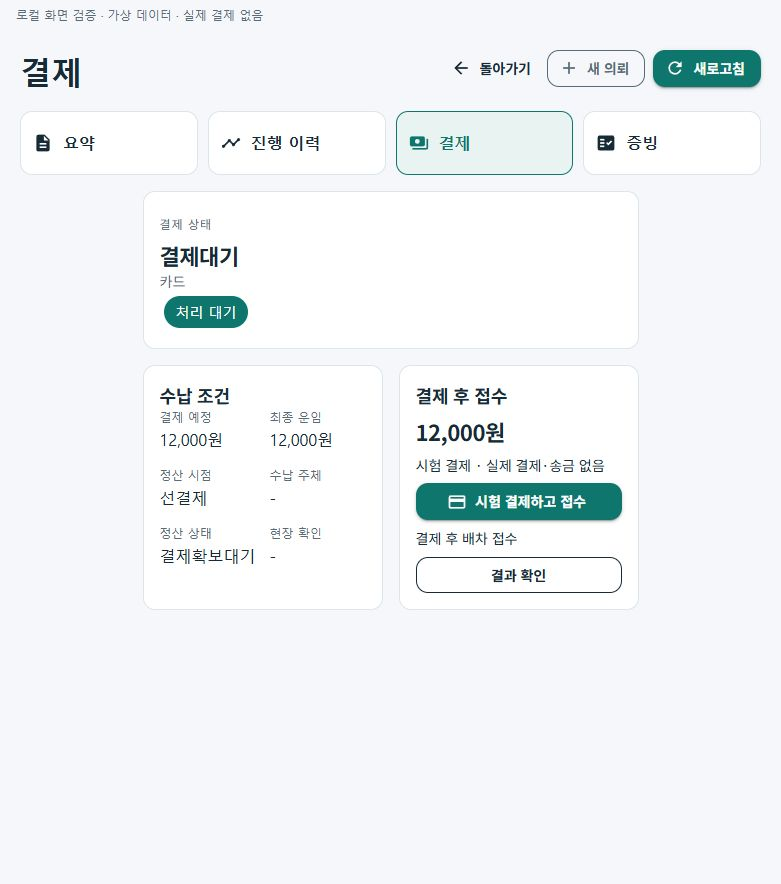
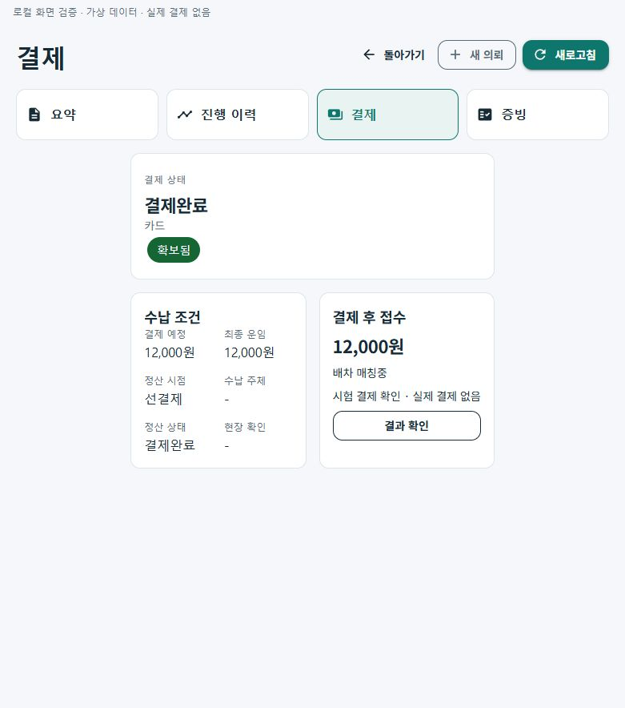
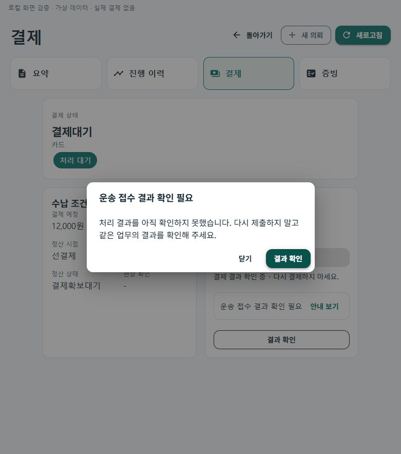
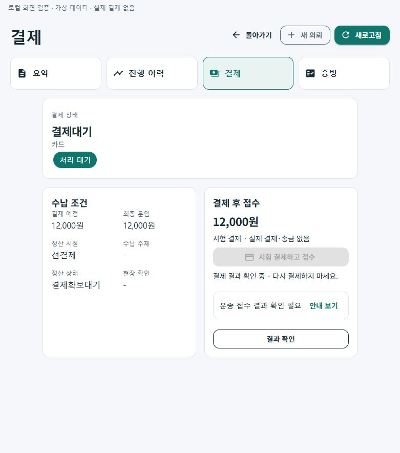

화물 선결제 접수·결과 확인
제품의 공통 Razor 결제 화면을 로컬 브라우저에서 가상 API·휘발 저장소로 확인한 기록입니다. 실제 결제·송금·휴대폰 화면·제품 API 통신의 증거와 구분합니다. 화면의 시험 금액은 12,000원입니다.
1. 결제 전 · 접수 준비
실제 결제 없음 안내와 결과 확인 버튼을 표시합니다.
2. 서버 확인 후 · 배차 인계
결제 승인 응답 뒤 같은 의뢰를 재조회한 결과입니다. 실제 배차 실행은 별도 서버 회귀로 확인합니다.
3. 시간초과 · 결과 확인 안내
재결제를 유도하지 않고 같은 업무의 결과 확인을 안내합니다.
4. 대화상자 닫기 · 기존 업무 유지
결과가 확인될 때까지 시험 결제 버튼을 막고 결과 확인을 제공합니다.